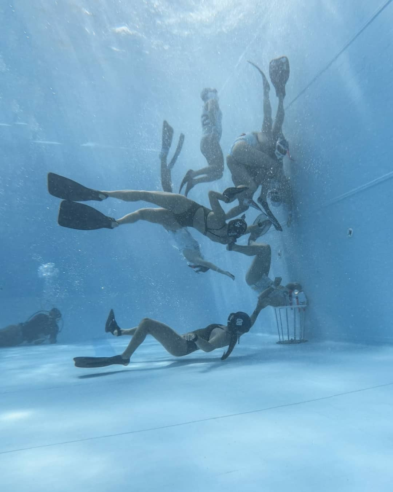

Qué es el rugby subacuático
El Rugby Subacuático es una disciplina reconocida por la Confederación Mundial de Actividades Subacuáticas (CMAS). El rugby subacuático es un deporte que se juega realmente en tres dimensiones, ya que se juega dentro de un medio acuático, por lo general en piscinas.
Esta disciplina, de relativa reciente creación, fue inventada en Alemania por un grupo de asociaciones de buzos con el objetivo de realizar entrenamientos físicos. Se estipula el nacimiento de la disciplina en la década de 1960 y a lo largo de estos años ha ido ganando popularidad en todo el mundo. A día de hoy se practica a escala internacional, llegando a países de cuatro de los cinco continentes.
El rugby subacuático es un deporte tridimensional, exigente y requiere una gran coordinación entre los miembros del equipo para poder jugar de manera efectiva. Los jugadores pueden moverse en cualquier dirección, tanto arriba como abajo, derecha o izquierda y delante o detrás. Entre muchas cualidades físicas, la capacidad de apnea es de las más importantes en este deporte, ya que los jugadores tienen que aguantar la respiración durante espacios de tiempo cortos, pero muy seguidos mientras se mueven bajo el agua.
 Objetivo y dimensiones del campo de juegoAunque el rugby subacuático tiene ciertas similitudes con el rugby tradicional, la dinámica del juego es muy diferente. Este deporte se juega en apnea bajo el agua en una piscina con las siguientes dimensiones: Largo entre 12 y 22 m, Ancho entre 8 y 12 m y Profundo entre 3,5 y 5 m.
El objetivo del juego es introducir el balón de flotabilidad negativa en la portería del equipo contrario para anotar goles. Estas porterías son unas cestas metálicas que tienen un diámetro de 40cm en la parte superior y están fijadas al suelo. Para poder cumplir ese objetivo, ambos equipos (uno con equipación oscura y otro con equipación clara) se enfrentan en el agua. La persona que tenga posesión del balón podrá agarrar a cualquier persona durante la posesión y podrá ser agarrada por cualquier deportista que esté en el agua.
 Posiciones
Posiciones
En defensa, existen tres posiciones clásicas: Portero, defensa y medio. De esta manera, la persona que se posiciona encima de la portería, hace de portera. La persona que se posiciona debajo de la portería y tocando el suelo, es la defensa o la guarda. Y por último, la persona que no tiene una posición fija, es el atacante o el medio.
En ataque, todos los jugadores participan y las posiciones varían libremente en función de la estrategia y tácticas de cada equipo. Cada equipo está formado por seis jugadores en el agua y 6 jugadores fuera, que son los cambios o relevos. Las rotaciones entre las personas que están en el agua y las que están en el banquillo son ilimitadas. Pero siempre tiene que haber un máximo de 6 jugadores en el agua.